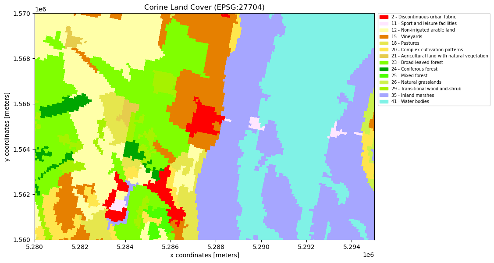

# tidy up!
import json
import os
import xarray as xr
import rioxarray
import rasterio
import numpy as np
from rasterio.crs import CRS
import dask.array as da
from glob import glob
from pathlib import Path
import matplotlib.pyplot as plt
import folium
import matplotlib.patches as patches
from datetime import datetime
import pandas as pd
import matplotlib.colors as mcolors
from matplotlib.colors import ListedColormap, BoundaryNorm
import matplotlib.patches as mpatches
from pyproj import TransformerDielectric Properties of Natural Media
In this notebook we want to look at how different surfaces like water, forest grasland and cities give us different backscatter.
We are going to load backscatering data from Sentinel 1 and we will use the Corine Landcoverdata to get a classification of different surfaces.
TODO: include time series - how much data changes over time or is affected by certain weather
Import packages
Load Sentinel 1 data
Load Metadata to get some information on the data. Using ‘.tags()’ we can extract a lot of useful information like the scale_factor.
As we can see frome here the data was captured 8 images between the 5th August 2023 and the 28th October 2023. The image contains Gamma VV values.
Now we can load the data and and apply preprocessing. From the Metaddata we could extract a scalingfactor of 100 which we now need to apply.
We get a xarray.DataSet and convert it to an xarray.DataArray because we only have one variable, the VV backscatter.
We have 8 timestemps. For performance reasons we will fous on only on one time becasue the data does not change to much over time.
We downsample already in the preprocessing because we do not need all the resolution because we are working with the corine data map and the resolution there is 100 by 100 meters. When we downsample x and y coordinates by 10 we get pixles of size 100 by 100meters which fits perfectly to the
(insert image of downscaled, normal and corine landcover)
data_path = Path('~/shared/datasets/rs/datapool/mrs/saocom_gamma/S1gammaNeusiedler').expanduser() # SAT-1 data is inside the saocom_gamma folder but this could change
tif_files = glob(f"{data_path}/*.tif")
from pprint import pprint
def _preprocess(x):
file = x.encoding['source']
print(f"{os.path.basename(file)}:")
print(json.dumps(rasterio.open(file).tags(), indent=4))
scale_factor = pd.to_numeric(
rasterio.open(x.encoding["source"]).tags().get('scale_factor')
)
x = x / scale_factor
time_value = pd.to_datetime( # is there a better way to get the date?
rasterio.open(x.encoding["source"]).tags().get('time_begin')
)
x = x.assign_coords(time=time_value).expand_dims("time")
return x.rename(
{"band_data": "sig0"}
).squeeze("band").drop_vars("band")
sig0_ds_large = xr.open_mfdataset(
'~/shared/datasets/rs/datapool/mrs/saocom_gamma/S1gammaNeusiedler/*.tif',
engine="rasterio",
combine='nested',
concat_dim="time",
preprocess=_preprocess
)
sig0_ds_large = sig0_ds_large[list(sig0_ds_large.data_vars.keys())[0]]
sig0_ds_largeD20230805_165122--_GMR------_S1AIWGRDH1VVA_146_A0105_EU010M_E052N015T1.tif:
{
"abs_orbit_number": "049743",
"band_1": "Gamma0_VV",
"border_noise_removed": "True",
"creator": "TUWGEO",
"distanceuom": "m",
"distancevalue": "10",
"equi7_tile": "EU010M_E052N015T1",
"ext_dem": "/eodc/private/tuwgeo/users/acube/data/input/acube_dem_eh.tif",
"grid": "Equi7 Grid",
"gtc_applied": "True",
"log_file": "tasklist_2_A01_gmr_jobfile_A0105_log_20231201_034630.xml",
"orbit_aux_file": "POE",
"parent_data_file": "S1A_IW_GRDH_1SDV_20230805T165122_20230805T165147_049743_05FB3C_64DB.zip",
"polarisation": "VV",
"precise_orbit_applied": "True",
"processing_date": "2023-12-01 03:46:31",
"processing_software": "SGRT",
"processing_software_version": "A0105-2.4.9.post.dev6.pre",
"rel_orbit_number": "146",
"rtf_applied": "True",
"sat_product_id": "S1AIWGRDH1VVA",
"scale_factor": "100.0",
"thermal_noise_removed": "True",
"time_begin": "2023-08-05 16:51:22",
"time_end": "2023-08-05 16:51:47",
"variable_name": "GMR",
"AREA_OR_POINT": "Area"
}
D20230817_165122--_GMR------_S1AIWGRDH1VVA_146_A0105_EU010M_E052N015T1.tif:
{
"abs_orbit_number": "049918",
"band_1": "Gamma0_VV",
"border_noise_removed": "True",
"creator": "TUWGEO",
"distanceuom": "m",
"distancevalue": "10",
"equi7_tile": "EU010M_E052N015T1",
"ext_dem": "/eodc/private/tuwgeo/users/acube/data/input/acube_dem_eh.tif",
"grid": "Equi7 Grid",
"gtc_applied": "True",
"log_file": "tasklist_2_A01_gmr_jobfile_A0105_log_20231201_065607.xml",
"orbit_aux_file": "POE",
"parent_data_file": "S1A_IW_GRDH_1SDV_20230817T165122_20230817T165147_049918_060121_784A.zip",
"polarisation": "VV",
"precise_orbit_applied": "True",
"processing_date": "2023-12-01 06:56:08",
"processing_software": "SGRT",
"processing_software_version": "A0105-2.4.9.post.dev6.pre",
"rel_orbit_number": "146",
"rtf_applied": "True",
"sat_product_id": "S1AIWGRDH1VVA",
"scale_factor": "100.0",
"thermal_noise_removed": "True",
"time_begin": "2023-08-17 16:51:22",
"time_end": "2023-08-17 16:51:47",
"variable_name": "GMR",
"AREA_OR_POINT": "Area"
}
D20230829_165123--_GMR------_S1AIWGRDH1VVA_146_A0105_EU010M_E052N015T1.tif:
{
"abs_orbit_number": "050093",
"band_1": "Gamma0_VV",
"border_noise_removed": "True",
"creator": "TUWGEO",
"distanceuom": "m",
"distancevalue": "10",
"equi7_tile": "EU010M_E052N015T1",
"ext_dem": "/eodc/private/tuwgeo/users/acube/data/input/acube_dem_eh.tif",
"grid": "Equi7 Grid",
"gtc_applied": "True",
"log_file": "tasklist_2_A01_gmr_jobfile_A0105_log_20231201_073256.xml",
"orbit_aux_file": "POE",
"parent_data_file": "S1A_IW_GRDH_1SDV_20230829T165123_20230829T165148_050093_060726_855E.zip",
"polarisation": "VV",
"precise_orbit_applied": "True",
"processing_date": "2023-12-01 07:32:57",
"processing_software": "SGRT",
"processing_software_version": "A0105-2.4.9.post.dev6.pre",
"rel_orbit_number": "146",
"rtf_applied": "True",
"sat_product_id": "S1AIWGRDH1VVA",
"scale_factor": "100.0",
"thermal_noise_removed": "True",
"time_begin": "2023-08-29 16:51:23",
"time_end": "2023-08-29 16:51:48",
"variable_name": "GMR",
"AREA_OR_POINT": "Area"
}
D20230910_165124--_GMR------_S1AIWGRDH1VVA_146_A0105_EU010M_E052N015T1.tif:
{
"abs_orbit_number": "050268",
"band_1": "Gamma0_VV",
"border_noise_removed": "True",
"creator": "TUWGEO",
"distanceuom": "m",
"distancevalue": "10",
"equi7_tile": "EU010M_E052N015T1",
"ext_dem": "/eodc/private/tuwgeo/users/acube/data/input/acube_dem_eh.tif",
"grid": "Equi7 Grid",
"gtc_applied": "True",
"log_file": "tasklist_4_A01_gmr_jobfile_A0105_log_20231201_080609.xml",
"orbit_aux_file": "POE",
"parent_data_file": "S1A_IW_GRDH_1SDV_20230910T165124_20230910T165149_050268_060D16_BAC4.zip",
"polarisation": "VV",
"precise_orbit_applied": "True",
"processing_date": "2023-12-01 08:06:10",
"processing_software": "SGRT",
"processing_software_version": "A0105-2.4.9.post.dev6.pre",
"rel_orbit_number": "146",
"rtf_applied": "True",
"sat_product_id": "S1AIWGRDH1VVA",
"scale_factor": "100.0",
"thermal_noise_removed": "True",
"time_begin": "2023-09-10 16:51:24",
"time_end": "2023-09-10 16:51:49",
"variable_name": "GMR",
"AREA_OR_POINT": "Area"
}
D20230922_165124--_GMR------_S1AIWGRDH1VVA_146_A0105_EU010M_E052N015T1.tif:
{
"abs_orbit_number": "050443",
"band_1": "Gamma0_VV",
"border_noise_removed": "True",
"creator": "TUWGEO",
"distanceuom": "m",
"distancevalue": "10",
"equi7_tile": "EU010M_E052N015T1",
"ext_dem": "/eodc/private/tuwgeo/users/acube/data/input/acube_dem_eh.tif",
"grid": "Equi7 Grid",
"gtc_applied": "True",
"log_file": "tasklist_7_A01_gmr_jobfile_A0105_log_20231201_082733.xml",
"orbit_aux_file": "POE",
"parent_data_file": "S1A_IW_GRDH_1SDV_20230922T165124_20230922T165149_050443_06130C_7915.zip",
"polarisation": "VV",
"precise_orbit_applied": "True",
"processing_date": "2023-12-01 08:27:33",
"processing_software": "SGRT",
"processing_software_version": "A0105-2.4.9.post.dev6.pre",
"rel_orbit_number": "146",
"rtf_applied": "True",
"sat_product_id": "S1AIWGRDH1VVA",
"scale_factor": "100.0",
"thermal_noise_removed": "True",
"time_begin": "2023-09-22 16:51:24",
"time_end": "2023-09-22 16:51:49",
"variable_name": "GMR",
"AREA_OR_POINT": "Area"
}
D20231004_165124--_GMR------_S1AIWGRDH1VVA_146_A0105_EU010M_E052N015T1.tif:
{
"abs_orbit_number": "050618",
"band_1": "Gamma0_VV",
"border_noise_removed": "True",
"creator": "TUWGEO",
"distanceuom": "m",
"distancevalue": "10",
"equi7_tile": "EU010M_E052N015T1",
"ext_dem": "/eodc/private/tuwgeo/users/acube/data/input/acube_dem_eh.tif",
"grid": "Equi7 Grid",
"gtc_applied": "True",
"log_file": "tasklist_13_A01_gmr_jobfile_A0105_log_20231201_035056.xml",
"orbit_aux_file": "POE",
"parent_data_file": "S1A_IW_GRDH_1SDV_20231004T165124_20231004T165149_050618_06190F_38E7.zip",
"polarisation": "VV",
"precise_orbit_applied": "True",
"processing_date": "2023-12-01 03:50:57",
"processing_software": "SGRT",
"processing_software_version": "A0105-2.4.9.post.dev6.pre",
"rel_orbit_number": "146",
"rtf_applied": "True",
"sat_product_id": "S1AIWGRDH1VVA",
"scale_factor": "100.0",
"thermal_noise_removed": "True",
"time_begin": "2023-10-04 16:51:24",
"time_end": "2023-10-04 16:51:49",
"variable_name": "GMR",
"AREA_OR_POINT": "Area"
}
D20231016_165124--_GMR------_S1AIWGRDH1VVA_146_A0105_EU010M_E052N015T1.tif:
{
"abs_orbit_number": "050793",
"band_1": "Gamma0_VV",
"border_noise_removed": "True",
"creator": "TUWGEO",
"distanceuom": "m",
"distancevalue": "10",
"equi7_tile": "EU010M_E052N015T1",
"ext_dem": "/eodc/private/tuwgeo/users/acube/data/input/acube_dem_eh.tif",
"grid": "Equi7 Grid",
"gtc_applied": "True",
"log_file": "tasklist_14_A01_gmr_jobfile_A0105_log_20231201_051314.xml",
"orbit_aux_file": "POE",
"parent_data_file": "S1A_IW_GRDH_1SDV_20231016T165124_20231016T165149_050793_061F17_EF2F.zip",
"polarisation": "VV",
"precise_orbit_applied": "True",
"processing_date": "2023-12-01 05:13:15",
"processing_software": "SGRT",
"processing_software_version": "A0105-2.4.9.post.dev6.pre",
"rel_orbit_number": "146",
"rtf_applied": "True",
"sat_product_id": "S1AIWGRDH1VVA",
"scale_factor": "100.0",
"thermal_noise_removed": "True",
"time_begin": "2023-10-16 16:51:24",
"time_end": "2023-10-16 16:51:49",
"variable_name": "GMR",
"AREA_OR_POINT": "Area"
}
D20231028_165124--_GMR------_S1AIWGRDH1VVA_146_A0105_EU010M_E052N015T1.tif:
{
"abs_orbit_number": "050968",
"band_1": "Gamma0_VV",
"border_noise_removed": "True",
"creator": "TUWGEO",
"distanceuom": "m",
"distancevalue": "10",
"equi7_tile": "EU010M_E052N015T1",
"ext_dem": "/eodc/private/tuwgeo/users/acube/data/input/acube_dem_eh.tif",
"grid": "Equi7 Grid",
"gtc_applied": "True",
"log_file": "tasklist_13_A01_gmr_jobfile_A0105_log_20231201_020603.xml",
"orbit_aux_file": "None",
"parent_data_file": "S1A_IW_GRDH_1SDV_20231028T165124_20231028T165149_050968_062503_8D6A.zip",
"polarisation": "VV",
"precise_orbit_applied": "False",
"processing_date": "2023-12-01 02:06:04",
"processing_software": "SGRT",
"processing_software_version": "A0105-2.4.9.post.dev6.pre",
"rel_orbit_number": "146",
"rtf_applied": "True",
"sat_product_id": "S1AIWGRDH1VVA",
"scale_factor": "100.0",
"thermal_noise_removed": "True",
"time_begin": "2023-10-28 16:51:24",
"time_end": "2023-10-28 16:51:49",
"variable_name": "GMR",
"AREA_OR_POINT": "Area"
}<xarray.DataArray 'sig0' (time: 8, y: 10000, x: 10000)> Size: 6GB
dask.array<concatenate, shape=(8, 10000, 10000), dtype=float64, chunksize=(1, 1, 10000), chunktype=numpy.ndarray>
Coordinates:
* x (x) float64 80kB 5.2e+06 5.2e+06 5.2e+06 ... 5.3e+06 5.3e+06
* y (y) float64 80kB 1.6e+06 1.6e+06 1.6e+06 ... 1.5e+06 1.5e+06
spatial_ref int64 8B 0
* time (time) datetime64[ns] 64B 2023-08-05T16:51:22 ... 2023-10-28...bounding_box = {
'x_min': 5_280_000.0,
'x_max': 5_295_000.0,
'y_min': 1_560_000.0,
'y_max': 1_570_000.0
}img = sig0_ds_large.isel(time=0) .coarsen(x=10, y=10, boundary='pad').mean()
fig, ax = plt.subplots(figsize=(15, 10))
img.plot(ax=ax, robust=True)
rect = patches.Rectangle(
(bounding_box['x_min'], bounding_box['y_min']),
bounding_box['x_max'] - bounding_box['x_min'],
bounding_box['y_max'] - bounding_box['y_min'],
linewidth=2,
edgecolor='red',
facecolor='none'
)
ax.add_patch(rect)
ax.set_aspect('equal')
plt.show()
sig0_ds = sig0_ds_large.sel(
x=slice(bounding_box['x_min'], bounding_box['x_max']),
y=slice(bounding_box['y_max'], bounding_box['y_min'])
)
sig0_ds<xarray.DataArray 'sig0' (time: 8, y: 1000, x: 1500)> Size: 96MB
dask.array<getitem, shape=(8, 1000, 1500), dtype=float64, chunksize=(1, 1, 1500), chunktype=numpy.ndarray>
Coordinates:
* x (x) float64 12kB 5.28e+06 5.28e+06 ... 5.295e+06 5.295e+06
* y (y) float64 8kB 1.57e+06 1.57e+06 ... 1.56e+06 1.56e+06
spatial_ref int64 8B 0
* time (time) datetime64[ns] 64B 2023-08-05T16:51:22 ... 2023-10-28...To get an idea of the region we are looking at we want to display it. Using ‘rubust=True’ will use the 2nd and 98th percentiles of the data to compute the color limits.
sig0_ds.isel(time=0).plot(robust=True).axes.set_aspect('equal')Load Corine Landcover data
We load the Corine Land Cover data which classifies the landcover of europa in 44 different areas.
We want to work with the Equi7 grid because it preserves geometric accuracy and minimises data oversampling over surfaces. So we need to convert the Corine Land Cover map to this coordinate system.
Loading data
corine_path = Path('~/shared/datasets/rs/datapool/mrs/Corine_Land_Cover_2018.tif').expanduser()
print(f"CRS :{rasterio.open(corine_path).meta['crs']}")
corine_ds_large = (
xr.open_dataset(corine_path,engine="rasterio")
.rename({"band_data": "land_cover"})["land_cover"]
.squeeze()
)
corine_ds_largeCRS :PROJCS["ETRS89-extended / LAEA Europe",GEOGCS["ETRS89",DATUM["European_Terrestrial_Reference_System_1989",SPHEROID["GRS 1980",6378137,298.257222101004,AUTHORITY["EPSG","7019"]],AUTHORITY["EPSG","6258"]],PRIMEM["Greenwich",0],UNIT["degree",0.0174532925199433,AUTHORITY["EPSG","9122"]],AUTHORITY["EPSG","4258"]],PROJECTION["Lambert_Azimuthal_Equal_Area"],PARAMETER["latitude_of_center",52],PARAMETER["longitude_of_center",10],PARAMETER["false_easting",4321000],PARAMETER["false_northing",3210000],UNIT["metre",1],AXIS["Easting",EAST],AXIS["Northing",NORTH],AUTHORITY["EPSG","3035"]]<xarray.DataArray 'land_cover' (y: 46000, x: 65000)> Size: 12GB
[2990000000 values with dtype=float32]
Coordinates:
band int64 8B 1
* x (x) float64 520kB 9e+05 9.002e+05 9.002e+05 ... 7.4e+06 7.4e+06
* y (y) float64 368kB 5.5e+06 5.5e+06 5.5e+06 ... 9.002e+05 9e+05
spatial_ref int64 8B ...
Attributes:
DataType: Thematic
AREA_OR_POINT: Area
RepresentationType: THEMATIC
STATISTICS_COVARIANCES: 136.429646247598
STATISTICS_MAXIMUM: 48
STATISTICS_MEAN: 25.753373398066
STATISTICS_MINIMUM: 1
STATISTICS_SKIPFACTORX: 1
STATISTICS_SKIPFACTORY: 1
STATISTICS_STDDEV: 11.680310194836Select area of interest
transformer = Transformer.from_crs("EPSG:27704", "EPSG:3035", always_xy=True)
bbox_27704 = sig0_ds_large.rio.transform_bounds(sig0_ds_large.rio.crs)
bbox_3035 = transformer.transform_bounds(*bbox_27704)
print(bbox_27704)
print(bbox_3035)
x_min, y_min, x_max, y_max = bbox_3035
corine_ds = corine_ds_large.sel(x=slice(x_min, x_max), y=slice(y_max, y_min))(5200000.0, 1500000.0, 5300000.0, 1600000.0)
(4728101.713653255, 2679708.979351567, 4844562.869274702, 2796700.500845548)Alignment of the datasets (raster + pixles)
def print_details(ds, ds_name):
print(f"{ds_name}:")
print(f"CRS: {ds.rio.crs}")
print(f"Bounds: {ds.rio.bounds()}")
print(f"Pixel size: {ds.rio.resolution()}\n")print_details(corine_ds, "corine_ds")
print_details(sig0_ds, "sig0_ds")corine_ds:
CRS: PROJCS["ETRS89-extended / LAEA Europe",GEOGCS["ETRS89",DATUM["European_Terrestrial_Reference_System_1989",SPHEROID["GRS 1980",6378137,298.257222101004,AUTHORITY["EPSG","7019"]],AUTHORITY["EPSG","6258"]],PRIMEM["Greenwich",0],UNIT["degree",0.0174532925199433,AUTHORITY["EPSG","9122"]],AUTHORITY["EPSG","4258"]],PROJECTION["Lambert_Azimuthal_Equal_Area"],PARAMETER["latitude_of_center",52],PARAMETER["longitude_of_center",10],PARAMETER["false_easting",4321000],PARAMETER["false_northing",3210000],UNIT["metre",1],AXIS["Easting",EAST],AXIS["Northing",NORTH],AUTHORITY["EPSG","3035"]]
Bounds: (4728100.0, 2679700.0, 4844600.0, 2796700.0)
Pixel size: (100.0, -100.0)
sig0_ds:
CRS: EPSG:27704
Bounds: (5280000.0, 1560000.0, 5295000.0, 1570000.0)
Pixel size: (10.0, -10.0)
Reprojecting does a whole lot for us
corine_ds = corine_ds.rio.reproject_match(sig0_ds)
print_details(corine_ds, "corine_ds")
print_details(sig0_ds, "sig0_ds")corine_ds:
CRS: EPSG:27704
Bounds: (5280000.0, 1560000.0, 5295000.0, 1570000.0)
Pixel size: (10.0, -10.0)
sig0_ds:
CRS: EPSG:27704
Bounds: (5280000.0, 1560000.0, 5295000.0, 1570000.0)
Pixel size: (10.0, -10.0)
Colormapping and Encoding
The color mapping is stored in a json file under assets. The encoding can be found here: https://collections.sentinel-hub.com/corine-land-cover/readme.html
with open('../assets/06_color_mapping.json', 'r') as f:
color_mapping_data = json.load(f)
color_mapping = {item['value']: item for item in color_mapping_data['land_cover']}
colors = [info['color'] for info in color_mapping.values()]
categories = [info['value'] for info in color_mapping.values()]
cmap =ListedColormap(colors)
norm = BoundaryNorm(categories + [max(categories) + 1], len(categories))max_length = 50
indentation = ' ' * 7
unique_values = corine_ds.values[~np.isnan(corine_ds.values)].astype(int)
handles = [
mpatches.Patch(color=info['color'],
label=f'{info["value"]} - ' +
(info["label"] if len(info["label"]) <= max_length
else f'{info["label"][:max_length]}-\n{indentation}{info["label"][max_length:]}'))
for info in color_mapping.values() if info['value'] in unique_values
]
corine_ds.plot(figsize=(10, 10), cmap=cmap, norm=norm, add_colorbar=False).axes.set_aspect('equal')
plt.legend(handles=handles, bbox_to_anchor=(1.05, 1), loc='upper left', borderaxespad=0., fontsize=7)
plt.show()
Now we can combine the datasets to one xarray dataset.
fs = xr.merge([sig0_ds,corine_ds]) .drop("band")
fs/tmp/ipykernel_79562/1138911145.py:1: DeprecationWarning: dropping variables using `drop` is deprecated; use drop_vars.
fs = xr.merge([sig0_ds,corine_ds]) .drop("band")<xarray.Dataset> Size: 102MB
Dimensions: (x: 1500, y: 1000, time: 8)
Coordinates:
* x (x) float64 12kB 5.28e+06 5.28e+06 ... 5.295e+06 5.295e+06
* y (y) float64 8kB 1.57e+06 1.57e+06 ... 1.56e+06 1.56e+06
spatial_ref int64 8B 0
* time (time) datetime64[ns] 64B 2023-08-05T16:51:22 ... 2023-10-28...
Data variables:
sig0 (time, y, x) float64 96MB dask.array<chunksize=(1, 1, 1500), meta=np.ndarray>
land_cover (y, x) float32 6MB 12.0 12.0 12.0 12.0 ... 35.0 35.0 35.0 35.0We create a Histogram for a specific landcover backscatter
waterbodies_mask = (fs.land_cover == 41)
waterbodies_mask.plot().axes.set_aspect('equal')waterbodies_sig0 = fs.sig0.isel(time=0).where(waterbodies_mask)
waterbodies_sig0.plot(robust=True).axes.set_aspect('equal')waterbodies_sig0.plot.hist(bins=30, edgecolor='black')(array([5.0000e+00, 1.2000e+01, 3.8000e+01, 1.5200e+02, 4.7300e+02,
1.2270e+03, 3.5930e+03, 1.0341e+04, 2.4635e+04, 4.4577e+04,
6.7412e+04, 7.5855e+04, 5.4059e+04, 2.0049e+04, 5.0760e+03,
2.8380e+03, 3.5350e+03, 4.7910e+03, 5.5180e+03, 4.6290e+03,
2.5030e+03, 7.5700e+02, 1.6400e+02, 4.8000e+01, 3.3000e+01,
1.6000e+01, 1.4000e+01, 1.7000e+01, 7.0000e+00, 9.0000e+00]),
array([-3.79099998e+01, -3.62603340e+01, -3.46106682e+01, -3.29609985e+01,
-3.13113327e+01, -2.96616669e+01, -2.80120010e+01, -2.63623352e+01,
-2.47126675e+01, -2.30629997e+01, -2.14133339e+01, -1.97636681e+01,
-1.81140022e+01, -1.64643345e+01, -1.48146687e+01, -1.31650009e+01,
-1.15153351e+01, -9.86566925e+00, -8.21600151e+00, -6.56633568e+00,
-4.91666794e+00, -3.26700211e+00, -1.61733627e+00, 3.23295593e-02,
1.68199539e+00, 3.33166504e+00, 4.98133087e+00, 6.63099670e+00,
8.28066254e+00, 9.93032837e+00, 1.15799999e+01]),
<BarContainer object of 30 artists>)
Function for plotting
def calc_histogram(corine_ds, sig0_ds, feature_codes):
all_backscatter_values = []
mean_var = {}
for code in feature_codes:
if code not in color_mapping:
print(f"Feature code {code} is not in the color mapping.")
break
mask = (corine_ds == code)
backscatter_values = sig0_ds.where(mask, drop=True).values.flatten()
backscatter_values = backscatter_values[~np.isnan(backscatter_values)]
if len(backscatter_values) == 0:
continue
all_backscatter_values.extend(backscatter_values)
mean_value = np.mean(backscatter_values)
variance_value = np.var(backscatter_values)
mean_var[code] = {
'mean': mean_value,
'variance': variance_value
}
global_min = np.min(all_backscatter_values)
global_max = np.max(all_backscatter_values)
return global_min, global_max, mean_var
def plot_mask(ax, mask, feature_name):
mask.plot(ax=ax)
ax.set_title(f"{feature_name} Mask")
ax.set_xlabel('x coordinate [meter]', labelpad=10)
ax.set_ylabel('y coordinate [meter]', labelpad=10)
ax.set_aspect('equal')
def plot_sig0(ax, sig0, feature_name):
sig0.plot(ax=ax, robust=True)
ax.set_title(f"{feature_name} sig0")
ax.set_xlabel('x coordinate [meter]', labelpad=10)
ax.set_ylabel('y coordinate [meter]', labelpad=10)
ax.set_aspect('equal')
cbar = ax.collections[0].colorbar
cbar.set_label('Backscatter Value (dB)', labelpad=10)
def plot_histogram(ax, sig0, feature_name, x_min, x_max, mean_var):
num_bins = int(np.ceil((x_max - x_min)))
bin_edges = np.linspace(x_min, x_max, num_bins + 1)
text_str = f"Mean: {mean_var['mean']:.2f}\nVariance: {mean_var['variance']:.2f}"
sig0.plot.hist(ax=ax, bins=bin_edges, edgecolor='black')
ax.set_title(f"{feature_name} sig0 Histogram")
ax.set_xlabel('sig0 Value')
ax.set_ylabel('Frequency')
ax.set_xlim(x_min, x_max)
ax.text(0.95, 0.95, text_str, transform=ax.transAxes,
verticalalignment='top', horizontalalignment='right',
bbox=dict(facecolor='white', alpha=0.5))
def plot_classes(fs, feature_codes):
corine_ds = fs.land_cover
sig0_ds=fs.sig0 .mean(dim='time') .compute() # or use .isel(time=0) for one timevalue
x_min, x_max, mean_var = calc_histogram(corine_ds, sig0_ds, feature_codes)
n_rows = len(feature_codes)
n_cols = 3
axes = plt.subplots(n_rows, n_cols, figsize=(15, n_rows * 4))[1].flatten()
for idx, code in enumerate(feature_codes):
feature_info = color_mapping[code]
feature_color = feature_info['color']
feature_name = feature_info['label']
# mask
mask = (corine_ds == code).persist() #.compute() # a little bit faster with .compute()
plot_mask(axes[idx * 3], mask, feature_name)
# backscatter
feature_backscatter = sig0_ds.where(mask)
plot_sig0(axes[idx * 3 + 1], feature_backscatter, feature_name)
# histogramm
plot_histogram(axes[idx * 3 + 2], feature_backscatter, feature_name, x_min, x_max, mean_var[code])
plt.tight_layout()
plt.show()The function can be used to plot the mask, the actuall backscatter and the histogram of the backscattering values of the corresponding landtype. Be careful! Dont forget the frequency count on the y axis. They are different form each plot.
# specify the features that should be selected:
feature_codes = [2,23,24,41]
plot_classes(fs, feature_codes)
Interactive Histograms over time using HoloViews
import hvplot.xarray
fs=fs.compute()
robust_min = fs.sig0.quantile(0.02).item()
robust_max = fs.sig0.quantile(0.98).item()
fs.sig0 .hvplot.image(x="x", y="y", groupby="time", clim=(robust_min, robust_max), aspect="equal", framewise=False).opts(
cmap="viridis", colorbar=True,
tools=["hover"])import numpy as np
import holoviews as hv
import holoviews.operation as hvop
robust_min = fs.sig0.quantile(0.02).item()
robust_max = fs.sig0.quantile(0.98).item()
img = fs.sig0.isel(time=0).hvplot.image(x="x", y="y", clim=(robust_min, robust_max), aspect="equal", framewise=False).opts(
cmap="viridis", colorbar=True,frame_width=600,
tools=["hover"])
def selected_hist(x_range, y_range):
obj = img.select(x=x_range, y=y_range) if x_range and y_range else img
return hvop.histogram(obj, num_bins=50, normed=True).opts(height=472, width=200)
rangexy = hv.streams.RangeXY(source=img)
img << hv.DynamicMap(selected_hist, streams=[rangexy])import numpy as np
import holoviews as hv
import holoviews.operation as hvop
from holoviews.streams import RangeXY
from holoviews import opts
hv_ds = hv.Dataset(fs.sig0.isel(time=0))
img = hv_ds.to(hv.Image, ["x", "y"])
def create_image(x_range, y_range):
obj = img.select(x=x_range, y=y_range) if x_range and y_range else img
return hv.Image(obj).opts(
aspect="equal", cmap="viridis", colorbar=True,
height=400, tools=["hover"]
)
rangexy = RangeXY()
hv.DynamicMap(create_image, streams=[rangexy]).hist(normed=True)WARNING:param.RasterPlot07141: Due to internal constraints, when aspect and width/height is set, the bokeh backend uses those values as frame_width/frame_height instead. This ensures the aspect is respected, but means that the plot might be slightly larger than anticipated. Set the frame_width/frame_height explicitly to suppress this warning.Dashboard all landcover over time
import holoviews as hv
import hvplot.xarray
import numpy as np
from holoviews import opts
from holoviews.streams import RangeXY
hv.extension('bokeh')
time = np.arange(8)
robust_min = fs.sig0.quantile(0.02).item()
robust_max = fs.sig0.quantile(0.98).item()
rangexy = RangeXY()
def load_image(time, x_range, y_range):
hv_ds = hv.Dataset(fs.sig0.isel(time=time))
img = hv_ds.to(hv.Image, ["x", "y"])
if x_range and y_range:
img = img.select(x=x_range, y=y_range)
return hv.Image(img).opts(
cmap="viridis", colorbar=True,frame_width=368,
tools=["hover"], clim=(robust_min, robust_max), aspect="equal")
# bin_edges = [i for i in range(int(robust_min), int(robust_max))] # Example bin edges
bin_edges = [i + j * 0.5 for i in range(int(robust_min)-2, int(robust_max)+2) for j in range(2)]
finished_img = hv.DynamicMap(
load_image,
kdims=['time'],
streams=[rangexy]
).redim.values(time=time).hist(normed=True, bins=bin_edges)
finished_img![](data:image/png;base64,iVBORw0KGgoAAAANSUhEUgAAAEAAAABACAYAAACqaXHeAAAABHNCSVQICAgIfAhkiAAAAAlwSFlz
AAAB+wAAAfsBxc2miwAAABl0RVh0U29mdHdhcmUAd3d3Lmlua3NjYXBlLm9yZ5vuPBoAAA6zSURB
VHic7ZtpeFRVmsf/5966taWqUlUJ2UioBBJiIBAwCZtog9IOgjqACsogKtqirT2ttt069nQ/zDzt
tI4+CrJIREFaFgWhBXpUNhHZQoKBkIUASchWla1S+3ar7r1nPkDaCAnZKoQP/D7mnPOe9/xy76n3
nFSAW9ziFoPFNED2LLK5wcyBDObkb8ZkxuaoSYlI6ZcOKq1eWFdedqNzGHQBk9RMEwFAASkk0Xw3
ETacDNi2vtvc7L0ROdw0AjoSotQVkKSvHQz/wRO1lScGModBFbDMaNRN1A4tUBCS3lk7BWhQkgpD
lG4852/+7DWr1R3uHAZVQDsbh6ZPN7CyxUrCzJMRouusj0ipRwD2uKm0Zn5d2dFwzX1TCGhnmdGo
G62Nna+isiUqhkzuKrkQaJlPEv5mFl2fvGg2t/VnzkEV8F5ioioOEWkLG86fvbpthynjdhXYZziQ
x1hC9J2NFyi8vCTt91Fh04KGip0AaG9zuCk2wQCVyoNU3Hjezee9bq92duzzTmxsRJoy+jEZZZYo
GTKJ6SJngdJqAfRzpze0+jHreUtPc7gpBLQnIYK6BYp/uGhw9YK688eu7v95ysgshcg9qSLMo3JC
4jqLKQFBgdKDPoQ+Pltb8dUyQLpeDjeVgI6EgLIQFT5tEl3rn2losHVsexbZ3EyT9wE1uGdkIPcy
BGxn8QUq1QrA5nqW5i2tLqvrrM9NK6AdkVIvL9E9bZL/oyfMVd/jqvc8LylzRBKDJSzIExwhQzuL
QYGQj4rHfFTc8mUdu3E7yoLtbTe9gI4EqVgVkug2i5+uXGo919ixbRog+3fTbQ8qJe4ZOYNfMoTI
OoshUNosgO60AisX15aeI2PSIp5KiFLI9ubb1vV3Qb2ltwLakUCDAkWX7/nHKRmmGIl9VgYsUhJm
2NXjKYADtM1ygne9QQDIXlk49FBstMKx66D1v4+XuQr7vqTe0VcBHQlRWiOCbmmSYe2SqtL6q5rJ
zsTb7lKx3FKOYC4DoqyS/B5bvLPxvD9Qtf6saxYLQGJErmDOdOMr/zo96km1nElr8bmPOBwI9COv
HnFPRIwmkSOv9kcAS4heRsidOkpeWBgZM+UBrTFAXNYL5Vf2ii9c1trNzpYdaoVil3WIc+wdk+gQ
noie3ecCcxt9ITcLAPWt/laGEO/9U6PmzZkenTtsSMQ8uYywJVW+grCstAvCIaAdArAsIWkRDDs/
KzLm2YcjY1Lv0UdW73HabE9n6V66cxSzfEmuJssTpKGVp+0vHq73FwL46eOjpMpbRAnNmJFrGJNu
Ukf9Yrz+3rghiumCKNXXWPhLYcjxGsIpoCMsIRoFITkW8AuyM8jC1+/QLx4bozCEJIq38+1rtpR6
V/yzb8eBlRb3fo5l783N0CWolAzJHaVNzkrTzlEp2bQ2q3TC5gn6wpnoQAmwSiGh2GitnTmVMc5O
UyfKWUKCIsU7+fZDKwqdT6DDpvkzAX4/+AMFjk0tDp5GRXLpQ2MUmhgDp5gxQT8+Y7hyPsMi8uxF
71H0oebujHALECjFKaW9Lm68n18wXp2kVzIcABytD5iXFzg+WVXkegpAsOOYziqo0OkK76GyquC3
ltZAzMhhqlSNmmWTE5T6e3IN05ITFLM4GdN0vtZ3ob8Jh1NAKXFbm5PtLU/eqTSlGjkNAJjdgn/N
aedXa0tdi7+t9G0FIF49rtMSEgAs1kDLkTPO7ebm4IUWeyh1bKomXqlgMG6kJmHcSM0clYLJ8XtR
1GTnbV3F6I5wCGikAb402npp1h1s7LQUZZSMIfALFOuL3UUrfnS8+rez7v9qcold5tilgHbO1fjK
9ubb17u9oshxzMiUBKXWqJNxd+fqb0tLVs4lILFnK71H0Ind7uiPgACVcFJlrb0tV6DzxqqTIhUM
CwDf1/rrVhTa33/3pGPxJYdQ2l2cbgVcQSosdx8uqnDtbGjh9SlDVSMNWhlnilfqZk42Th2ZpLpf
xrHec5e815zrr0dfBZSwzkZfqsv+1FS1KUknUwPARVvItfKUY+cn57yP7qv07UE3p8B2uhUwLk09
e0SCOrK+hbdYHYLjRIl71wWzv9jpEoeOHhGRrJAzyEyNiJuUqX0g2sBN5kGK6y2Blp5M3lsB9Qh4
y2Ja6x6+i0ucmKgwMATwhSjdUu49tKrQ/pvN5d53ml2CGwCmJipmKjgmyuaXzNeL2a0AkQ01Th5j
2DktO3Jyk8f9vcOBQHV94OK+fPumJmvQHxJoWkaKWq9Vs+yUsbq0zGT1I4RgeH2b5wef7+c7bl8F
eKgoHVVZa8ZPEORzR6sT1BzDUAD/d9F78e2Tzv99v8D+fLVTqAKAsbGamKey1Mt9Ann4eH3gTXTz
idWtAJ8PQWOk7NzSeQn/OTHDuEikVF1R4z8BQCy+6D1aWRfY0tTGG2OM8rRoPaeIj5ZHzJxszElN
VM8K8JS5WOfv8mzRnQAKoEhmt8gyPM4lU9SmBK1MCQBnW4KONT86v1hZ1PbwSXPw4JWussVjtH9Y
NCoiL9UoH/6PSu8jFrfY2t36erQHXLIEakMi1SydmzB31h3GGXFDFNPaK8Rme9B79Ixrd0WN+1ij
NRQ/doRmuFLBkHSTOm5GruG+pFjFdAmorG4IXH1Qua6ASniclfFtDYt+oUjKipPrCQB7QBQ2lrgP
fFzm+9XWUtcqJ3/5vDLDpJ79XHZk3u8nGZ42qlj1+ydtbxysCezrydp6ugmipNJ7WBPB5tydY0jP
HaVNzs3QzeE4ZpTbI+ZbnSFPbVOw9vsfnVvqWnirPyCNGD08IlqtYkh2hjZ5dErEQzoNm+6ykyOt
Lt5/PQEuSRRKo22VkydK+vvS1XEKlhCJAnsqvcVvH7f/ZU2R67eXbMEGAMiIV5oWZWiWvz5Fv2xG
sjqNJQRvn3Rs2lji/lNP19VjAQDgD7FHhujZB9OGqYxRkZxixgRDVlqS6uEOFaJUVu0rPFzctrnF
JqijImVp8dEKVWyUXDk92zAuMZ6bFwpBU1HrOw6AdhQgUooChb0+ItMbWJitSo5Ws3IAOGEOtL53
0vHZih9sC4vtofZ7Qu6523V/fmGcds1TY3V36pUsBwAbSlxnVh2xLfAD/IAIMDf7XYIkNmXfpp2l
18rkAJAy9HKFaIr/qULkeQQKy9zf1JgDB2uaeFNGijo5QsUyacNUUTOnGO42xSnv4oOwpDi1zYkc
efUc3I5Gk6PhyTuVKaOGyLUAYPGIoY9Pu/atL/L92+4q9wbflRJ2Trpm/jPjdBtfnqB/dIThcl8A
KG7hbRuKnb8qsQsVvVlTrwQAQMUlf3kwJI24Z4JhPMtcfng5GcH49GsrxJpGvvHIaeem2ma+KSjQ
lIwUdYyCY8j4dE1KzijNnIP2llF2wcXNnsoapw9XxsgYAl6k+KzUXbi2yP3KR2ecf6z3BFsBICdW
nvnIaG3eHybqX7vbpEqUMT+9OL4Qpe8VON7dXuFd39v19FoAABRVePbGGuXTszO0P7tu6lghUonE
llRdrhArLvmKdh9u29jcFiRRkfLUxBiFNiqSU9icoZQHo5mYBI1MBgBH6wMNb+U7Pnw337H4gi1Y
ciWs+uks3Z9fztUvfzxTm9Ne8XXkvQLHNytOOZeiD4e0PgkAIAYCYknKUNUDSXEKzdWNpnil7r4p
xqkjTarZMtk/K8TQ6Qve78qqvXurGwIJqcOUKfUWHsm8KGvxSP68YudXq4pcj39X49uOK2X142O0
Tz5/u/7TVybqH0rSya6ZBwD21/gubbrgWdDgEOx9WUhfBaC2ibcEBYm7a7x+ukrBMNcEZggyR0TE
T8zUPjikQ4VosQZbTpS4vqizBKvqmvjsqnpfzaZyx9JPiz1/bfGKdgD45XB1zoIMzYbfTdS/NClB
Gct0USiY3YL/g0LHy/uq/Ef6uo5+n0R/vyhp17Klpge763f8rMu6YU/zrn2nml+2WtH+Z+5IAAFc
2bUTdTDOSNa9+cQY7YLsOIXhevEkCvzph7a8laecz/Un/z4/Ae04XeL3UQb57IwU9ZDr9UuKVajv
nxp1+1UVIo/LjztZkKH59fO3G/JemqCfmaCRqbqbd90ZZ8FfjtkfAyD0J/9+C2h1hDwsSxvGjNDc
b4zk5NfrSwiQblLHzZhg+Jf4aPlUwpDqkQqa9nimbt1/TDH8OitGMaQnj+RJS6B1fbF7SY1TqO5v
/v0WAADl1f7zokgS7s7VT2DZ7pegUjBM7mjtiDZbcN4j0YrHH0rXpCtY0qPX0cVL0rv5jv/ZXend
0u/EESYBAFBU4T4Qa5TflZOhTe7pmKpaP8kCVUVw1+yhXfJWvn1P3hnXi33JsTN6PnP3hHZ8Z3/h
aLHzmkNPuPj7Bc/F/Q38CwjTpSwQXgE4Vmwry9tpfq/ZFgqFMy4AVDtCvi8rvMvOmv0N4YwbVgEA
sPM72/KVnzfspmH7HQGCRLG2yL1+z8XwvPcdCbsAANh+xPzstgMtxeGKt+6MK3/tacfvwhWvIwMi
oKEBtm0H7W+UVfkc/Y1V0BhoPlDr/w1w/eu1vjIgAgDg22OtX6/eYfnEz/focrZTHAFR+PSs56/7
q32nwpjazxgwAQCwcU/T62t3WL7r6/jVRa6/byp1rei+Z98ZUAEAhEPHPc8fKnTU9nbgtnOe8h0l
9hcGIqmODLQAHCy2Xti6v/XNRivf43f4fFvIteu854+VHnR7q9tfBlwAAGz+pnndB9vM26UebAe8
SLHujPOTPVW+rwY+sxskAAC2HrA8t2Vvc7ffP1r9o+vwR2dcr92InIAbKKC1FZ5tB1tf+/G8p8sv
N/9Q5zd/XR34LYCwV5JdccMEAMDBk45DH243r/X4xGvqxFa/GNpS7n6rwOwNWwHVE26oAADYurf1
zx/utOzt+DMKYM0p17YtZZ5VNzqfsB2HewG1WXE8PoZ7gOclbTIvynZf9JV+fqZtfgs/8F/Nu5rB
EIBmJ+8QRMmpU7EzGRsf2FzuePqYRbzh/zE26EwdrT10f6r6o8HOYzCJB9Dpff8tbnGLG8L/A/WE
roTBs2RqAAAAAElFTkSuQmCC)
![]()
Dashboard backscatter of different landcover over time
import holoviews as hv
import hvplot.xarray
import numpy as np
from holoviews import opts
from holoviews.streams import RangeXY
hv.extension('bokeh')
time = np.arange(8)
robust_min = fs.sig0.quantile(0.02).item()
robust_max = fs.sig0.quantile(0.98).item()
rangexy = RangeXY()
def load_image(time, x_range, y_range):
hv_ds = hv.Dataset(fs.sig0.isel(time=time))
img = hv_ds.to(hv.Image, ["x", "y"])
if x_range and y_range:
img = img.select(x=x_range, y=y_range)
return hv.Image(img).opts(
cmap="viridis", colorbar=True,frame_width=368,
tools=["hover"], clim=(robust_min, robust_max), aspect="equal")
# bin_edges = [i for i in range(int(robust_min), int(robust_max))] # Example bin edges
bin_edges = [i + j * 0.5 for i in range(int(robust_min)-2, int(robust_max)+2) for j in range(2)]
finished_img = hv.DynamicMap(
load_image,
kdims=['time'],
streams=[rangexy]
).redim.values(time=time).hist(normed=True, bins=bin_edges)
finished_imgold approaches
import numpy as np
import holoviews as hv
import holoviews.operation as hvop
robust_min = fs.sig0.quantile(0.02).item()
robust_max = fs.sig0.quantile(0.98).item()
img = fs.sig0 .hvplot.image(x="x", y="y", groupby="time", clim=(robust_min, robust_max), aspect="equal", framewise=False).opts(
cmap="viridis", colorbar=True,
tools=["hover"])
def selected_hist(x_range, y_range):
obj = img.select(x=x_range, y=y_range) if x_range and y_range else img
return hvop.histogram(obj, num_bins=50, normed=True).opts(height=472, width=200)
rangexy = hv.streams.RangeXY(source=img)
img << hv.DynamicMap(selected_hist, streams=[rangexy])--------------------------------------------------------------------------- Exception Traceback (most recent call last) File ~/miniconda3/envs/06_backscatter-variability/lib/python3.10/site-packages/IPython/core/formatters.py:977, in MimeBundleFormatter.__call__(self, obj, include, exclude) 974 method = get_real_method(obj, self.print_method) 976 if method is not None: --> 977 return method(include=include, exclude=exclude) 978 return None 979 else: File ~/miniconda3/envs/06_backscatter-variability/lib/python3.10/site-packages/holoviews/core/dimension.py:1275, in Dimensioned._repr_mimebundle_(self, include, exclude) 1268 def _repr_mimebundle_(self, include=None, exclude=None): 1269 """ 1270 Resolves the class hierarchy for the class rendering the 1271 object using any display hooks registered on Store.display 1272 hooks. The output of all registered display_hooks is then 1273 combined and returned. 1274 """ -> 1275 return Store.render(self) File ~/miniconda3/envs/06_backscatter-variability/lib/python3.10/site-packages/holoviews/core/options.py:1428, in Store.render(cls, obj) 1426 data, metadata = {}, {} 1427 for hook in hooks: -> 1428 ret = hook(obj) 1429 if ret is None: 1430 continue File ~/miniconda3/envs/06_backscatter-variability/lib/python3.10/site-packages/holoviews/ipython/display_hooks.py:287, in pprint_display(obj) 285 if not ip.display_formatter.formatters['text/plain'].pprint: 286 return None --> 287 return display(obj, raw_output=True) File ~/miniconda3/envs/06_backscatter-variability/lib/python3.10/site-packages/holoviews/ipython/display_hooks.py:258, in display(obj, raw_output, **kwargs) 256 elif isinstance(obj, (Layout, NdLayout, AdjointLayout)): 257 with option_state(obj): --> 258 output = layout_display(obj) 259 elif isinstance(obj, (HoloMap, DynamicMap)): 260 with option_state(obj): File ~/miniconda3/envs/06_backscatter-variability/lib/python3.10/site-packages/holoviews/ipython/display_hooks.py:149, in display_hook.<locals>.wrapped(element) 147 try: 148 max_frames = OutputSettings.options['max_frames'] --> 149 mimebundle = fn(element, max_frames=max_frames) 150 if mimebundle is None: 151 return {}, {} File ~/miniconda3/envs/06_backscatter-variability/lib/python3.10/site-packages/holoviews/ipython/display_hooks.py:223, in layout_display(layout, max_frames) 220 max_frame_warning(max_frames) 221 return None --> 223 return render(layout) File ~/miniconda3/envs/06_backscatter-variability/lib/python3.10/site-packages/holoviews/ipython/display_hooks.py:76, in render(obj, **kwargs) 73 if renderer.fig == 'pdf': 74 renderer = renderer.instance(fig='png') ---> 76 return renderer.components(obj, **kwargs) File ~/miniconda3/envs/06_backscatter-variability/lib/python3.10/site-packages/holoviews/plotting/renderer.py:397, in Renderer.components(self, obj, fmt, comm, **kwargs) 395 if embed or config.comms == 'default': 396 return self._render_panel(plot, embed, comm) --> 397 return self._render_ipywidget(plot) File ~/miniconda3/envs/06_backscatter-variability/lib/python3.10/site-packages/holoviews/plotting/renderer.py:419, in Renderer._render_ipywidget(self, plot) 417 def _render_ipywidget(self, plot): 418 # Handle rendering object as ipywidget --> 419 widget = ipywidget(plot, combine_events=True) 420 if hasattr(widget, '_repr_mimebundle_'): 421 return widget._repr_mimebundle_(), {} File ~/miniconda3/envs/06_backscatter-variability/lib/python3.10/site-packages/panel/io/notebook.py:561, in ipywidget(obj, doc, **kwargs) 559 from ..pane import panel 560 doc = doc if doc else Document() --> 561 model = panel(obj, **kwargs).get_root(doc=doc) 562 widget = BokehModel(model, combine_events=True) 563 if hasattr(widget, '_view_count'): File ~/miniconda3/envs/06_backscatter-variability/lib/python3.10/site-packages/panel/pane/base.py:514, in Pane.get_root(self, doc, comm, preprocess) 512 root = wrapper.get_root(doc, comm, preprocess) 513 else: --> 514 root_view, root = self._get_root_model(doc, comm, preprocess) 515 ref = root.ref['id'] 516 state._views[ref] = (root_view, root, doc, comm) File ~/miniconda3/envs/06_backscatter-variability/lib/python3.10/site-packages/panel/pane/base.py:455, in Pane._get_root_model(self, doc, comm, preprocess) 453 root_view = self 454 else: --> 455 root = self.layout._get_model(doc, comm=comm) 456 root_view = self.layout 457 if preprocess: File ~/miniconda3/envs/06_backscatter-variability/lib/python3.10/site-packages/panel/layout/base.py:183, in Panel._get_model(self, doc, root, parent, comm) 181 root = root or model 182 self._models[root.ref['id']] = (model, parent) --> 183 objects, _ = self._get_objects(model, [], doc, root, comm) 184 props = self._get_properties(doc) 185 props[self._property_mapping['objects']] = objects File ~/miniconda3/envs/06_backscatter-variability/lib/python3.10/site-packages/panel/layout/base.py:165, in Panel._get_objects(self, model, old_objects, doc, root, comm) 163 else: 164 try: --> 165 child = pane._get_model(doc, root, model, comm) 166 except RerenderError as e: 167 if e.layout is not None and e.layout is not self: File ~/miniconda3/envs/06_backscatter-variability/lib/python3.10/site-packages/panel/pane/holoviews.py:438, in HoloViews._get_model(self, doc, root, parent, comm) 436 plot = self.object 437 else: --> 438 plot = self._render(doc, comm, root) 440 plot.pane = self 441 backend = plot.renderer.backend File ~/miniconda3/envs/06_backscatter-variability/lib/python3.10/site-packages/panel/pane/holoviews.py:532, in HoloViews._render(self, doc, comm, root) 529 if comm: 530 kwargs['comm'] = comm --> 532 return renderer.get_plot(self.object, **kwargs) File ~/miniconda3/envs/06_backscatter-variability/lib/python3.10/site-packages/holoviews/plotting/bokeh/renderer.py:68, in BokehRenderer.get_plot(self_or_cls, obj, doc, renderer, **kwargs) 61 @bothmethod 62 def get_plot(self_or_cls, obj, doc=None, renderer=None, **kwargs): 63 """ 64 Given a HoloViews Viewable return a corresponding plot instance. 65 Allows supplying a document attach the plot to, useful when 66 combining the bokeh model with another plot. 67 """ ---> 68 plot = super().get_plot(obj, doc, renderer, **kwargs) 69 if plot.document is None: 70 plot.document = Document() if self_or_cls.notebook_context else curdoc() File ~/miniconda3/envs/06_backscatter-variability/lib/python3.10/site-packages/holoviews/plotting/renderer.py:234, in Renderer.get_plot(self_or_cls, obj, doc, renderer, comm, **kwargs) 232 if isinstance(obj, AdjointLayout): 233 obj = Layout(obj) --> 234 plot = self_or_cls.plotting_class(obj)(obj, renderer=renderer, 235 **plot_opts) 236 defaults = [kd.default for kd in plot.dimensions] 237 init_key = tuple(v if d is None else d for v, d in 238 zip(plot.keys[0], defaults)) File ~/miniconda3/envs/06_backscatter-variability/lib/python3.10/site-packages/holoviews/plotting/bokeh/plot.py:734, in LayoutPlot.__init__(self, layout, keys, **params) 732 def __init__(self, layout, keys=None, **params): 733 super().__init__(layout, keys=keys, **params) --> 734 self.layout, self.subplots, self.paths = self._init_layout(layout) 735 if self.top_level: 736 self.traverse(lambda x: attach_streams(self, x.hmap, 2), 737 [GenericElementPlot]) File ~/miniconda3/envs/06_backscatter-variability/lib/python3.10/site-packages/holoviews/plotting/bokeh/plot.py:787, in LayoutPlot._init_layout(self, layout) 785 layout_count += 1 786 num = 0 if empty else layout_count --> 787 subplots, adjoint_layout = self._create_subplots( 788 view, positions, layout_dimensions, frame_ranges, num=num 789 ) 791 # Generate the AdjointLayoutsPlot which will coordinate 792 # plotting of AdjointLayouts in the larger grid 793 plotopts = self.lookup_options(view, 'plot').options File ~/miniconda3/envs/06_backscatter-variability/lib/python3.10/site-packages/holoviews/plotting/bokeh/plot.py:818, in LayoutPlot._create_subplots(self, layout, positions, layout_dimensions, ranges, num) 816 continue 817 if not displayable(element): --> 818 element = collate(element) 820 subplot_opts = dict(adjoined=main_plot) 821 # Options common for any subplot File ~/miniconda3/envs/06_backscatter-variability/lib/python3.10/site-packages/holoviews/plotting/util.py:78, in collate(obj) 76 if obj.type in [DynamicMap, HoloMap]: 77 obj_name = obj.type.__name__ ---> 78 raise Exception(f"Nesting a {obj_name} inside a DynamicMap is not " 79 "supported. Ensure that the DynamicMap callback " 80 "returns an Element or (Nd)Overlay. If you have " 81 "applied an operation ensure it is not dynamic by " 82 "setting dynamic=False.") 83 return obj.collate() 84 if isinstance(obj, HoloMap): Exception: Nesting a DynamicMap inside a DynamicMap is not supported. Ensure that the DynamicMap callback returns an Element or (Nd)Overlay. If you have applied an operation ensure it is not dynamic by setting dynamic=False.
:AdjointLayout
:DynamicMap [time]
:Image [x,y] (sig0)
:DynamicMap []
:DynamicMap [time]
:Histogram [sig0] (Frequency)# this one works open file again if it seems to not work
import holoviews as hv
import hvplot.xarray
import numpy as np
from holoviews import opts
from holoviews.streams import RangeXY
hv.extension('bokeh')
time = np.arange(8)
robust_min = fs.sig0.quantile(0.02).item()
robust_max = fs.sig0.quantile(0.98).item()
rangexy = RangeXY()
def load_image(time, x_range, y_range):
hv_ds = hv.Dataset(fs.sig0.isel(time=time))
img = hv_ds.to(hv.Image, ["x", "y"])
if x_range and y_range:
img = img.select(x=x_range, y=y_range)
return hv.Image(img).opts(
cmap="viridis", colorbar=True,frame_width=600,
tools=["hover"], clim=(robust_min, robust_max), aspect="equal")
finished_img = hv.DynamicMap(
load_image,
kdims=['time'],
streams=[rangexy]
).redim.values(time=time).hist(normed=True)
finished_img # rangexy approach https://holoviews.org/reference/streams/bokeh/RangeXY.html
import holoviews as hv
import holoviews.operation as hvop
hv.extension('bokeh')
# xarray to holoviews dataset
hv_ds = hv.Dataset(fs.sig0)
img = hv_ds.to(hv.Image, ["x", "y"], groupby="time")
img.opts(aspect="equal", cmap="viridis", colorbar=True, height=400, tools=["hover"])
def selected_hist(x_range, y_range, time):
obj = img[time].select(x=x_range, y=y_range) if x_range and y_range else img[time]
return hvop.histogram(obj)
rangexy = hv.streams.RangeXY(source=img)
time_stream = hv.streams.Stream.define('Time', time=0)()
#img << hv.DynamicMap(selected_hist, streams=[rangexy])
hv.DynamicMap(selected_hist, streams=[rangexy, time_stream]) << img--------------------------------------------------------------------------- KeyError Traceback (most recent call last) File ~/miniconda3/envs/06_backscatter-variability/lib/python3.10/site-packages/holoviews/ipython/display_hooks.py:129, in option_state(element) 128 try: --> 129 yield 130 except Exception: File ~/miniconda3/envs/06_backscatter-variability/lib/python3.10/site-packages/holoviews/ipython/display_hooks.py:258, in display(obj, raw_output, **kwargs) 257 with option_state(obj): --> 258 output = layout_display(obj) 259 elif isinstance(obj, (HoloMap, DynamicMap)): File ~/miniconda3/envs/06_backscatter-variability/lib/python3.10/site-packages/holoviews/ipython/display_hooks.py:149, in display_hook.<locals>.wrapped(element) 148 max_frames = OutputSettings.options['max_frames'] --> 149 mimebundle = fn(element, max_frames=max_frames) 150 if mimebundle is None: File ~/miniconda3/envs/06_backscatter-variability/lib/python3.10/site-packages/holoviews/ipython/display_hooks.py:223, in layout_display(layout, max_frames) 221 return None --> 223 return render(layout) File ~/miniconda3/envs/06_backscatter-variability/lib/python3.10/site-packages/holoviews/ipython/display_hooks.py:76, in render(obj, **kwargs) 74 renderer = renderer.instance(fig='png') ---> 76 return renderer.components(obj, **kwargs) File ~/miniconda3/envs/06_backscatter-variability/lib/python3.10/site-packages/holoviews/plotting/renderer.py:397, in Renderer.components(self, obj, fmt, comm, **kwargs) 396 return self._render_panel(plot, embed, comm) --> 397 return self._render_ipywidget(plot) File ~/miniconda3/envs/06_backscatter-variability/lib/python3.10/site-packages/holoviews/plotting/renderer.py:419, in Renderer._render_ipywidget(self, plot) 417 def _render_ipywidget(self, plot): 418 # Handle rendering object as ipywidget --> 419 widget = ipywidget(plot, combine_events=True) 420 if hasattr(widget, '_repr_mimebundle_'): File ~/miniconda3/envs/06_backscatter-variability/lib/python3.10/site-packages/panel/io/notebook.py:561, in ipywidget(obj, doc, **kwargs) 560 doc = doc if doc else Document() --> 561 model = panel(obj, **kwargs).get_root(doc=doc) 562 widget = BokehModel(model, combine_events=True) File ~/miniconda3/envs/06_backscatter-variability/lib/python3.10/site-packages/panel/pane/base.py:514, in Pane.get_root(self, doc, comm, preprocess) 513 else: --> 514 root_view, root = self._get_root_model(doc, comm, preprocess) 515 ref = root.ref['id'] File ~/miniconda3/envs/06_backscatter-variability/lib/python3.10/site-packages/panel/pane/base.py:455, in Pane._get_root_model(self, doc, comm, preprocess) 454 else: --> 455 root = self.layout._get_model(doc, comm=comm) 456 root_view = self.layout File ~/miniconda3/envs/06_backscatter-variability/lib/python3.10/site-packages/panel/layout/base.py:183, in Panel._get_model(self, doc, root, parent, comm) 182 self._models[root.ref['id']] = (model, parent) --> 183 objects, _ = self._get_objects(model, [], doc, root, comm) 184 props = self._get_properties(doc) File ~/miniconda3/envs/06_backscatter-variability/lib/python3.10/site-packages/panel/layout/base.py:165, in Panel._get_objects(self, model, old_objects, doc, root, comm) 164 try: --> 165 child = pane._get_model(doc, root, model, comm) 166 except RerenderError as e: File ~/miniconda3/envs/06_backscatter-variability/lib/python3.10/site-packages/panel/pane/holoviews.py:438, in HoloViews._get_model(self, doc, root, parent, comm) 437 else: --> 438 plot = self._render(doc, comm, root) 440 plot.pane = self File ~/miniconda3/envs/06_backscatter-variability/lib/python3.10/site-packages/panel/pane/holoviews.py:532, in HoloViews._render(self, doc, comm, root) 530 kwargs['comm'] = comm --> 532 return renderer.get_plot(self.object, **kwargs) File ~/miniconda3/envs/06_backscatter-variability/lib/python3.10/site-packages/holoviews/plotting/bokeh/renderer.py:68, in BokehRenderer.get_plot(self_or_cls, obj, doc, renderer, **kwargs) 63 """ 64 Given a HoloViews Viewable return a corresponding plot instance. 65 Allows supplying a document attach the plot to, useful when 66 combining the bokeh model with another plot. 67 """ ---> 68 plot = super().get_plot(obj, doc, renderer, **kwargs) 69 if plot.document is None: File ~/miniconda3/envs/06_backscatter-variability/lib/python3.10/site-packages/holoviews/plotting/renderer.py:216, in Renderer.get_plot(self_or_cls, obj, doc, renderer, comm, **kwargs) 215 # Initialize DynamicMaps with first data item --> 216 initialize_dynamic(obj) 218 if not renderer: File ~/miniconda3/envs/06_backscatter-variability/lib/python3.10/site-packages/holoviews/plotting/util.py:270, in initialize_dynamic(obj) 269 if not len(dmap): --> 270 dmap[dmap._initial_key()] File ~/miniconda3/envs/06_backscatter-variability/lib/python3.10/site-packages/holoviews/core/spaces.py:1216, in DynamicMap.__getitem__(self, key) 1215 if cache is not None: return cache -> 1216 val = self._execute_callback(*tuple_key) 1217 if data_slice: File ~/miniconda3/envs/06_backscatter-variability/lib/python3.10/site-packages/holoviews/core/spaces.py:983, in DynamicMap._execute_callback(self, *args) 982 with dynamicmap_memoization(self.callback, self.streams): --> 983 retval = self.callback(*args, **kwargs) 984 return self._style(retval) File ~/miniconda3/envs/06_backscatter-variability/lib/python3.10/site-packages/holoviews/core/spaces.py:581, in Callable.__call__(self, *args, **kwargs) 580 try: --> 581 ret = self.callable(*args, **kwargs) 582 except KeyError: 583 # KeyError is caught separately because it is used to signal 584 # invalid keys on DynamicMap and should not warn Cell In[25], line 15, in selected_hist(x_range, y_range, time) 13 def selected_hist(x_range, y_range, time): ---> 15 obj = img[time].select(x=x_range, y=y_range) if x_range and y_range else img[time] 17 return hvop.histogram(obj) File ~/miniconda3/envs/06_backscatter-variability/lib/python3.10/site-packages/holoviews/core/ndmapping.py:626, in NdMapping.__getitem__(self, indexslice) 624 if all(not (isinstance(el, (slice, set, list, tuple)) or callable(el)) 625 for el in map_slice): --> 626 return self._dataslice(self.data[map_slice], data_slice) 627 else: KeyError: (0,) During handling of the above exception, another exception occurred: KeyError Traceback (most recent call last) File ~/miniconda3/envs/06_backscatter-variability/lib/python3.10/site-packages/IPython/core/formatters.py:977, in MimeBundleFormatter.__call__(self, obj, include, exclude) 974 method = get_real_method(obj, self.print_method) 976 if method is not None: --> 977 return method(include=include, exclude=exclude) 978 return None 979 else: File ~/miniconda3/envs/06_backscatter-variability/lib/python3.10/site-packages/holoviews/core/dimension.py:1275, in Dimensioned._repr_mimebundle_(self, include, exclude) 1268 def _repr_mimebundle_(self, include=None, exclude=None): 1269 """ 1270 Resolves the class hierarchy for the class rendering the 1271 object using any display hooks registered on Store.display 1272 hooks. The output of all registered display_hooks is then 1273 combined and returned. 1274 """ -> 1275 return Store.render(self) File ~/miniconda3/envs/06_backscatter-variability/lib/python3.10/site-packages/holoviews/core/options.py:1428, in Store.render(cls, obj) 1426 data, metadata = {}, {} 1427 for hook in hooks: -> 1428 ret = hook(obj) 1429 if ret is None: 1430 continue File ~/miniconda3/envs/06_backscatter-variability/lib/python3.10/site-packages/holoviews/ipython/display_hooks.py:287, in pprint_display(obj) 285 if not ip.display_formatter.formatters['text/plain'].pprint: 286 return None --> 287 return display(obj, raw_output=True) File ~/miniconda3/envs/06_backscatter-variability/lib/python3.10/site-packages/holoviews/ipython/display_hooks.py:257, in display(obj, raw_output, **kwargs) 255 output = element_display(obj) 256 elif isinstance(obj, (Layout, NdLayout, AdjointLayout)): --> 257 with option_state(obj): 258 output = layout_display(obj) 259 elif isinstance(obj, (HoloMap, DynamicMap)): File ~/miniconda3/envs/06_backscatter-variability/lib/python3.10/contextlib.py:153, in _GeneratorContextManager.__exit__(self, typ, value, traceback) 151 value = typ() 152 try: --> 153 self.gen.throw(typ, value, traceback) 154 except StopIteration as exc: 155 # Suppress StopIteration *unless* it's the same exception that 156 # was passed to throw(). This prevents a StopIteration 157 # raised inside the "with" statement from being suppressed. 158 return exc is not value File ~/miniconda3/envs/06_backscatter-variability/lib/python3.10/site-packages/holoviews/ipython/display_hooks.py:131, in option_state(element) 129 yield 130 except Exception: --> 131 dynamic_optstate(element, state=optstate) 132 raise File ~/miniconda3/envs/06_backscatter-variability/lib/python3.10/site-packages/holoviews/ipython/display_hooks.py:121, in dynamic_optstate(element, state) 118 def dynamic_optstate(element, state=None): 119 # Temporary fix to avoid issues with DynamicMap traversal 120 DynamicMap._deep_indexable = False --> 121 optstate = StoreOptions.state(element,state=state) 122 DynamicMap._deep_indexable = True 123 return optstate File ~/miniconda3/envs/06_backscatter-variability/lib/python3.10/site-packages/holoviews/core/options.py:1754, in StoreOptions.state(cls, obj, state) 1752 current_custom_keys = set(Store.custom_options().keys()) 1753 for key in current_custom_keys.difference(original_custom_keys): -> 1754 del Store.custom_options()[key] 1755 cls.restore_ids(obj, ids) KeyError: 48
:AdjointLayout
:DynamicMap
:HoloMap [time]
:Image [x,y] (sig0)import holoviews as hv
import holoviews.operation as hvop
hv.extension('bokeh')
hv_ds = hv.Dataset(fs.sig0)
def dynamic_image(time):
return hv_ds.to(hv.Image, ["x", "y"], groupby="time")[time].opts(aspect="equal", cmap="viridis", colorbar=True, height=400, tools=["hover"])
# Function to create the histogram
def selected_hist(x_range, y_range, time):
img = dynamic_image(time)
obj = img.select(x=x_range, y=y_range) if x_range and y_range else img
return hvop.histogram(obj)
# Streams for interaction
rangexy = hv.streams.RangeXY(source=dynamic_image(0))
time_stream = hv.streams.Stream.define('Time', time=0)()
# DynamicMap for the image and histogram
dynamic_img = hv.DynamicMap(dynamic_image, streams=[time_stream])
dynamic_hist = hv.DynamicMap(selected_hist, streams=[rangexy, time_stream])
# Overlay the image and histogram
layout = dynamic_img + dynamic_hist
layout.opts(merge_tools=False)--------------------------------------------------------------------------- KeyError Traceback (most recent call last) Cell In[26], line 17 14 return hvop.histogram(obj) 16 # Streams for interaction ---> 17 rangexy = hv.streams.RangeXY(source=dynamic_image(0)) 18 time_stream = hv.streams.Stream.define('Time', time=0)() 20 # DynamicMap for the image and histogram Cell In[26], line 8, in dynamic_image(time) 7 def dynamic_image(time): ----> 8 return hv_ds.to(hv.Image, ["x", "y"], groupby="time")[time].opts(aspect="equal", cmap="viridis", colorbar=True, height=400, tools=["hover"]) File ~/miniconda3/envs/06_backscatter-variability/lib/python3.10/site-packages/holoviews/core/ndmapping.py:626, in NdMapping.__getitem__(self, indexslice) 622 map_slice = self._expand_slice(map_slice) 624 if all(not (isinstance(el, (slice, set, list, tuple)) or callable(el)) 625 for el in map_slice): --> 626 return self._dataslice(self.data[map_slice], data_slice) 627 else: 628 conditions = self._generate_conditions(map_slice) KeyError: (0,)
import numpy as np
import holoviews as hv
import holoviews.operation as hvop
import panel as pn
hv.extension('bokeh')
robust_min = fs.sig0.quantile(0.02).item()
robust_max = fs.sig0.quantile(0.98).item()
img = fs.sig0 .hvplot.image(x="x", y="y", groupby="time", clim=(robust_min, robust_max), aspect="equal", framewise=False).opts(
cmap="viridis", colorbar=True,
tools=["hover"])
def selected_hist(x_range, y_range, time, **kwargs):
obj = img.select(x=x_range, y=y_range).select(time=time) if x_range and y_range else dynamic_image(time)
return hvop.histogram(obj, num_bins=50, normed=True).opts(height=472, width=200)
time_slider = pn.widgets.IntSlider(value=0, start=0, end=len(fs.sig0.time) - 1, step=1, name='Time')
rangexy = hv.streams.RangeXY(source=dynamic_image(0))
img << hv.DynamicMap(selected_hist, streams=[rangexy, time_slider])https://holoviews.org/Reference_Manual/holoviews.operation.html